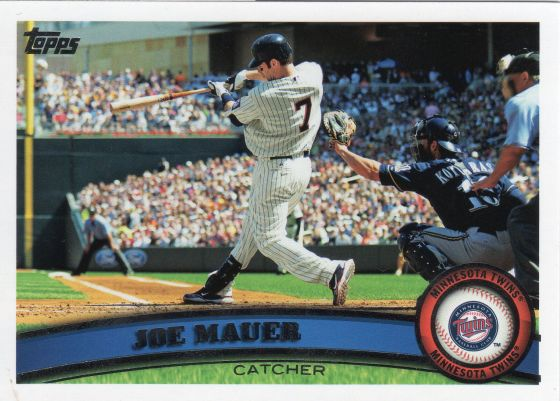

<--Previous Page
Page Index
Next Page-->

2011 Topps
#550 Joe Mauer
A close second was
#573 Nyjer Morgan
and
#301 Seth Smith
These are the other candidates for coolest card:
#233 Ramon Hernandez
#302 Adrian Beltre
#34 Rick Ankiel
#238 Pedro Ciriaco
#435 Elvis Andrus
#526 Jason Donald
#474 Jeff Mathis
I noticed several cards where the positioning of the ball was... interesting...
Reid Brignac #284
is trying to grab the ball after his bunt attempt.
Josh Hamilton #650
is NOT going to catch that one!
Maicer Izturis #529
is about to have a headache. The umpire has a great look at this pitch to
Brennan Boesch #175
.
Wade Davis #467
has the best disguised move to third base, ever!
Matt Cain #570
has his eye on the ball. The count on
Luke Scott #294
must be 3-something :)
Danny Valencia #390
is reverse-relaying the ball to left field?
Deja Vu!
John Jay #295
and 1983's Mookie Wilson
Josh Willingham #225
and 2007's Jacoby Ellsbury
Nick Swisher #279
and 1956's Rocky Bridges
Yuniesky Betancourt #289
and 1996's Jose Offerman
Magglio Ordonez #181
is the 2nd to remind me of game 2 of the '68 series (and he's a Tiger!)
Carlos Beltran #515
and his "opposite number" 2007's Tad Iguchi
{kind=link}
{kind=link}
{kind=link}
{kind=link}
{kind=link}
{kind=link}
{kind=link}